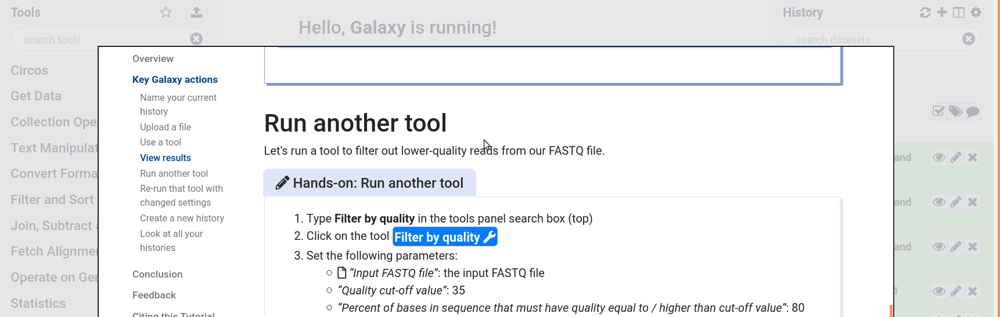

Galaxy Training Materials Webhook¶
We have added an enabled-by-default webhook for accessing the GTN materials within Galaxy. This provides users with easy access to a significant wealth of free, open Galaxy training material across a wide array of topics.
For many users screen space is at a premium, this embeds the training directly within Galaxy, allowing users to toggle back and forth quite easily.
By default the webhook will check if /training-material/ is accessible, on
the same server as Galaxy. If it is, it will display that. Otherwise, it will
show the public website.
Click to Run¶

If you choose to setup a proxy for the GTN (or deploy a local training site), then an advanced feature will be activated: Tools will be highlighted in the GTN, and your users can click on these to have that tool loaded in Galaxy.
Proxy Setup¶
location /training-material/ {
proxy_pass https://training.galaxyproject.org/training-material/;
}